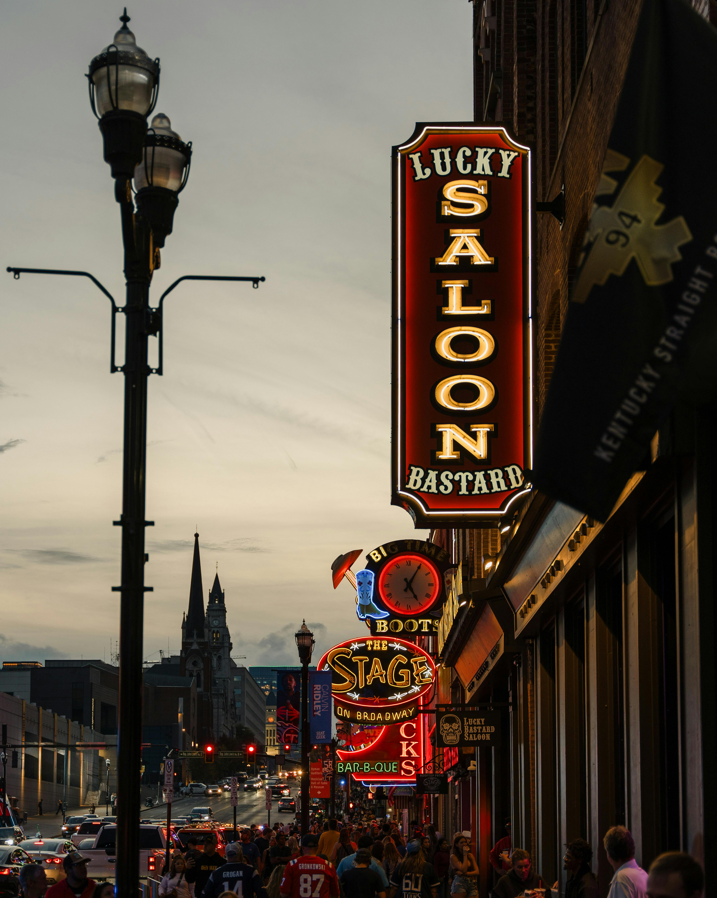

Three Days in Music City
This Nashville itinerary is designed for a group weekend, birthday trip, or bachelorette-style getaway with music, food, and downtown exploring.
Back to Home
Daily Itinerary
Day 1: Arrival and Broadway Night
Arrive in Nashville, check into your hotel, and start with a casual dinner. Spend the evening walking Broadway and listening to live music.
Day 2: Brunch, Murals, and Shopping
Begin with brunch, then visit popular mural spots and boutiques. Explore 12 South or The Gulch before a group dinner reservation.
Day 3: Coffee, Souvenirs, and Departure
Keep the final morning relaxed with coffee, pastries, and souvenir shopping before heading home.
Trip Tips
- Make dinner reservations early for larger groups.
- Wear comfortable shoes for walking downtown.
- Leave flexible time so the group does not feel rushed.